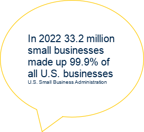

Career Development Resources
Career Development Resources
Strategic Networking with a LAMP List
The LAMP List is a powerful tool designed to help job seekers identify and prioritize target organizations for strategic networking—critical steps before applying for jobs or internships. By organizing key information about potential employers, you can focus your networking efforts on opportunities that align with your goals, values, and background.
What is a LAMP List?
LAMP stands for List (of organizations), Alumni (connections at each organization), Motivation (your interest level), and Posting (current job openings). This spreadsheet-based tool helps you track 40 target organizations and prioritize them for networking and applications.
LAMP List Structure
Create a spreadsheet (Excel or Google Sheets) with 5 core columns:
| # | List (Organization Name) | Alumni (Y/N: Do you have a connection?) | Motivation (1-5 ranking) | Posting (1-3 ranking of current openings) |
|---|---|---|---|---|
| 1 | Ernst & Young | Y | 5 | 3 |
| 2 | MathWorks | Y | 4 | 1 |
| 3 | Arbor Metrix | Y | 3 | 3 |
| 40 | DC Public Library | Y | 4 | 2 |
Step 1: Build Your "List" of 40 Organizations
Curate 40 organizations across 4 categories—mix small, medium, and large companies (note: 33.2 million small businesses made up 99.9% of all U.S. businesses in 2022, per the U.S. Small Business Administration).
1. 10 "Dream" Organizations
- Start with employers you’ve always wanted to work for or are curious about (include their competitors!)
- Align with your values/identities: Use resources like the Human Rights Campaign Corporate Equality Index, 50+ Black-owned/led companies, Corporate Religious Equity, Diversity & Inclusion (REDI) Index, or Certified B Corporations
- Lean into hobbies: Search for organizations tied to your interests (e.g., top music streaming companies if you love music, travel apps if you enjoy traveling)
2. 10 Alumni Organizations
- Focus on employers that hire U-M/UMSI alumni (use UMSI Employment & Internship Reports, UCAN, or LinkedIn)
- International students: Use the International Alumni Outcomes spreadsheet to find companies with a history of hiring international candidates
- Expand beyond U-M: Include organizations connected to your other affiliations, associations, or communities
3. 10 Organizations with Job Postings
- Use job aggregators like Indeed: Enter a job title/function in the "WHAT" field and location in the "WHERE" field (e.g., "Data Engineer" in "Seattle")
- International students: Use tools like the Ultimate H1B Sponsor Checker Chrome Extension to identify companies that may offer sponsorship
4. 10 Trending or Sponsorship-Focused Organizations
- Find "trending" organizations: Search Google with keywords like "[Industry/Job] Trends" (e.g., "Machine Learning Trends," "Health Data Trends," "Fastest Growing Companies in Seattle")
- International students: Prioritize companies with sponsorship history (use sites like Interstride or MyVisaJobs)
Step 2: Fill the "Alumni" Column
Identify if you have alumni or connections at each organization—this helps you leverage existing networks for informational interviews or referrals.
How to Search for Alumni
- Sign into LinkedIn and navigate to the University of Michigan page
- Click on the "Alumni" tab to access the alumni dashboard
- Type the name of an organization from your list to see U-M alumni who work there
- Mark "Y" (Yes) in the Alumni column if you find a connection; mark "N" (No) if not
Step 3: Rank "Motivation" (1-5)
Assess your interest in each organization to prioritize your efforts. Use a 1-5 scale, where 5 = most interested and 1 = least interested.
Questions to Guide Your Ranking
- Which organizations are you most curious about or drawn to?
- What is your general opinion of the organization’s mission, culture, or work?
- Does the organization align with your key skills, values, or identities?
| Motivation Score | Meaning |
|---|---|
| 5 | Favorite Organizations (Top Priority) |
| 4 | Second Tier Options |
| 3 | Third Tier Options |
| 2 | Least Favorite Organizations |
| 1 | Organizations Unknown to You |
Step 4: Track "Posting" (1-3)
Check if each organization has current job openings that match your target role. Use job aggregators like Indeed or Google to search.
How to Score Postings
| Posting Score | Criteria |
|---|---|
| 3 | Found a job opening for your target role (or a similar role) |
| 2 | No matching roles, but found any current postings at the organization |
| 1 | No current job postings found |
Search Tip: Enter the organization name + your target role in the "What" field (e.g., "Library of Congress Librarian"). Add a location in the "Where" field if you have a specific area in mind.
Step 5: Sort Your LAMP List
Sorting helps you identify top-priority organizations for networking and applications. Use these 3 levels of sorting (in order):
- First Level: Motivation Column (Largest to Smallest) - 5s first
- Second Level: Posting Column (Largest to Smallest) - 3s first
- Third Level: Alumni Column (Reverse Alphabetical) -"Y" first
Action Step: Start networking with the top organizations on your sorted list—reach out to alumni, request informational interviews, or apply for open roles!
Pro Tips for Success
- ✔ Speed over perfection: Create your LAMP List in 40 minutes—focus on good information quickly, not exhaustive research.
- ✔ International students: Add a "Sponsorship" column to track organizations with a history of sponsoring visas (prioritize these!)
- ✔ Next steps: Use the CDO Canvas Site's "Networking & Informational Interview" module for resources on writing networking emails, conducting informational interviews, and more.
Useful Networking Resources
- LinkedIn - Search for alumni and connect with professionals
- Interstride - Find sponsorship-friendly companies (for international students)
- MyVisaJobs - Research visa sponsorship history
- Indeed - Search for job postings and use H1B sponsor tools
- U-M Career Development Office (CDO) - Access UCAN, alumni reports, and Canvas modules